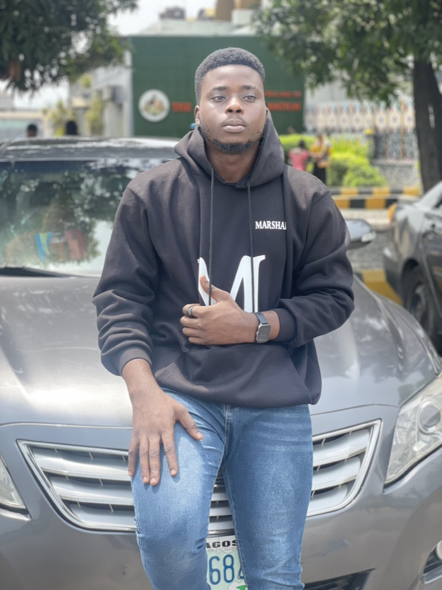

Summary

My name is Victor Ajibodu
A Product Full Stack Developer
Contact Me
My Hobbies
I am a Product Designer with years of experience, I have a strong
foundation in visual design, a creative mindset and an aspiring software developer.
I bring a unique perspective to product design, combining skills with user-centred
thinking and problem-solving abilities. My career history showcases
my adaptability and willingness to explore new areas within the
design field. Here's a short overview of my career history and skills:
EDUCATION
- B.Sc in Political Science
2015-2019
Obafemi Awolowo University, ile-ife, Nigeria.
- Senior School Certificate Examination (SSCE)
2009-2014
Sango Otta High School, Ogun State.
WORK EXPERIENCE
- Fast Credit Limited
Product designer
July, 2022 - Till Date
- Responsiblities:
- - Presented design concepts,strategies,and solutions
to stake holders.
- - Worked closely with designers, engineers, and product
managers to create solutions.
- - Created low-fidelity(lo-fi) and high-fidelity(hi-fi)
interaction designs.
- -Took feedback from various sources and use it to
refine and improve designs.
- - Incorporated feedback into design iterations and
decision-making processes.
- Bincom Dev Center
Graphic/UI/UX Designer Team Lead
March, 2021 - July, 2022
- Responsiblities:
- - Developed 300+ graphic design projects (Brochures, Flyers, Presentations, Logos, Websites, Ads Banners,
Banners, Magazine, Edit Video).
- - Led a team of six designers to develop graphic and
production materials.
- - Designed Brand Manuals to guide the activities of the
organizations.
- - Mentored and coached team members to produce high
performing,quality team members.
- Provided leadership and direction for my team members by
supervising activities to meet month on month deliverables
- Accomplished studying design briefs and determining
requirements for the design.
- Used Figma, InDesign, Illustrator and Photoshop daily to
produce designs as required by the managers.
- Litesorbs Creative
Graphic Designer (Contract)
October, 2020 - Feburary, 2021
- Responsiblities:
- - Achieved design of various concepts of flyers design
and I was able to consistently meet deadlines and
requirements.
- - Accomplished working on briefs to designs and
communicate the intended message.
- - Achieved creation of high volume of layout, graphic,
production design.
- - Tested graphics across various platforms, created
mockups, and marketing materials on-brand.
- Litesorbs Creative
Graphic Designer (Contract)
October, 2020 - Feburary, 2021
- Responsiblities:
- - Frequently integrated photographic, typography,
and graphic elements.
- - Studied various designs online to implement and grow.
- - Worked closely with the designer to learn and carry
out assignments given to me.
- - Researched graphics trends and projected industry
changes, capitalizing on emerging opportunities.
- NYSC, SURULERE LOCAL GOVERNMENT AREA
Corp Member
March, 2020 - March, 2021
- Responsiblities:
- - Carried out all task given by my supervisors and other
members of the department.
SKILLS
- Adobe Photoshop
- Adobe Illustrator
- Adobe Indesign
- Adobe Premiere Pro
- Adobe XD
- Corel Draw
- Figma
- Html
- CSS